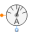

SensorsSensors to measure variables in magnetic networks |
|
Package Contents
|
Sensor to measure magnetic flux |
|
|
MagneticPotentialDifferenceSensor Sensor to measure magnetic potential difference |
|
|  |
Sensor to measure magnetic potential |
Information
This information is part of the Modelica Standard Library maintained by the Modelica Association.
This package provides sensors for the magnetic potential difference and the magnetic flux in magnetic circuit.